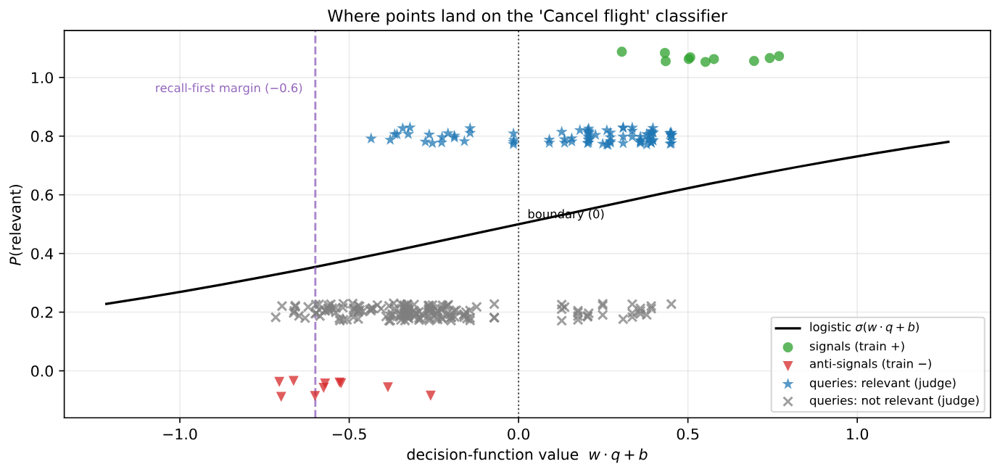

面向客户的大模型客服通常受几十条行为规则约束，比如"只有买了旅行险才能补偿"。每一轮对话都要先判断哪几条规则和当前情况相关，再把它们放进提示词。Parlant 引擎原来的做法是每轮对每条规则问一次大模型"现在相关吗"，36 条规则每轮就要调用 36 次、消耗约 69,000 个提示词 token。Parlant 团队提出的 Signals and Queries（下称 S&Q）把这一步换成离线训练的小分类器：对每条规则，先让大模型离线写 10 条"应当触发这条规则"的用户消息，再写 10 条"看起来很像、但应由相邻规则处理"的用户消息，把它们编码成向量，为这条规则单独训练一个逻辑回归。上线后每轮只需一次 embedding 调用和 36 次向量点积，CPU 耗时 37 微秒，作者估算单轮成本比逐条问大模型低约 10 万倍。在 τ²-bench 航空客服的 254 个对话片段上，以大模型判定为标准，召回率不低于 90% 时，S&Q 的精确率在 Gemini embedding 上为 32%、OpenAI embedding 上为 34%，比简单的余弦阈值只高 1 到 3 个点；改用从真实对话中挖出的样例后，精确率升到 43.5% 和 41.6%。这篇论文真正有价值的结论不在默认配置的成绩，而在于它把瓶颈定位到了样例的来源上。
1. 问题：漏一条规则是错误，多一条只是浪费
把所有规则每轮都塞进提示词并不可行。长上下文中间的内容容易被忽视，单条指令得到的注意力会被稀释，指令越多越难全部遵守，token 成本也随规则数线性增长。所以需要先筛出相关规则。
筛选的代价不对称。漏掉取消政策，客服可能做出本该拒绝的操作；多放一条无关规则，只多花几百个 token。因此 S&Q 的目标是先保证每条规则召回率至少 90%，在此前提下再提高精确率。它是一个预筛选器：筛掉的规则后面再也找不回来，留下的规则还会被客服模型自己再读一遍，无关的可以被忽略。
最便宜的方案是直接拿对话去和规则原文算向量相似度，但效果很差。对话是口语化的用户消息，规则是正式的条文，两者在向量空间里的区分度不高。另一种思路是像流程图那样，在不同节点放不同指令，让每个提示词都很小，但这样会把整体行为拆得很碎，维护困难。
2. 方法
2.1 离线：为每条规则造正例和难负例
对每条规则，用 gemini-3.5-flash 仅根据规则原文生成两组用户消息。第一组是 signals，即应当触发这条规则的消息，例如取消政策对应"我想取消下周去芝加哥的航班"。第二组是 anti-signals，即同一话题附近、但应由别的规则处理的消息，例如"我想把航班从周二改到周四"，这属于改签规则。生成过程不使用任何真实对话。
2.2 每条规则一个逻辑回归
对每条规则，用这 20 条消息的向量训练一个逻辑回归。打分用的是逻辑回归在 sigmoid 之前的值 （对数几率）：0 对应"相关"概率 0.5，负值对应概率低于一半；分数高于阈值 就把这条规则交给后面的 LLM 判断。每条规则的分类器只依赖它自己的样例，新增或修改一条规则，只需为它重新生成样例、训练一个分类器（约 2 毫秒），其他规则不受影响。
作者解释了为什么不用"其他规则的正例"当负例。他们早期试过这种做法，结果两条在向量空间里挨得很近的规则会互相落进对方的负例集，两个分类器都把它们共同的区域推到负的一侧，一轮对话明明和其中一条相关，却被两个分类器同时拒绝。规则越多、近义规则越多，这个问题越严重。每条规则自带负例，就从结构上避免了这种互相压制。
2.3 线上：两种对话视角取最大值
第 t 轮时，对两种向量打分并取最大值：一是到当前为止整段对话的向量，二是到当前为止每一条用户消息单独的向量。所有向量先减去中心向量再归一化，中心是 36 条规则原文向量的平均；分数超过全局阈值 θ 就保留该规则。对单条用户消息取最大值，是为了在对话换话题时，前面的内容不会稀释后面话题的信号。

这张图把整篇论文的难点画得很清楚。生成的样例在分类器上分得干干净净，真实对话却全都落在两者之间，相关和无关的大量重叠。为了让相关对话尽量不漏，阈值只能放到负值（Gemini 用 −0.45，OpenAI 用 −0.4，即相关概率约 0.4 也放行），代价是大批无关对话也被放了进来。精确率只有三成多，根源就在这里：生成样例和真实对话之间存在明显的分布差异。
3. 实验
3.1 设置
对话是 50 段由 Parlant 客服和 τ²-bench 用户模拟器生成的航空客服对话，每个以用户消息结尾的前缀算一个查询状态，共 254 个。规则共 36 条：τ²-bench 航空政策的 6 节，加上作者另写的 30 条（身份验证、行李索赔、无人陪伴儿童、票价规则、欺诈处理等），其中故意放了几组近义规则。标准答案由 gemini-3.1-flash-lite 用 Parlant 线上的相关性提示词，对每个（对话前缀，规则）组合打 1 到 5 分，4 分及以上算相关，共 9,144 个标签。指标在 31 条至少出现过一次的规则上做宏平均。基线有四种，打分方式两类：一类用查询和规则原文的余弦；另一类用查询和这条规则 10 条 signals 的余弦里的最大值。每类再分别取前 K 条，或者按余弦阈值截断。基线和 S&Q 用同样的两种查询向量、同样取最大值。
3.2 召回率和精确率

S&Q 在每个召回水平上精确率都最高，在 60% 到 70% 的召回区间领先约 4 个点，但到了实际要用的高召回端，差距缩小到 OpenAI 上 2.9 个点、Gemini 上 0.9 个点。取前 K 条的方法即使取 K=15（36 条中的 15 条），召回率也只有约 66%，因为每轮同时相关的规则数量变化很大，固定条数的截断天然不适合这个任务。
| 方法 | Gemini 召回% | Gemini 精确% | OpenAI 召回% | OpenAI 精确% |
|---|---|---|---|---|
| 前 K 条（规则原文，K=15） | 66 | 40 | 64 | 41 |
| 前 K 条（signals，K=15） | 65 | 39 | 64 | 39 |
| 余弦阈值（规则原文） | 93 | 31 | 94 | 31 |
| 余弦阈值（signals） | 91 | 31 | 92 | 31 |
| S&Q | 93 | 32 | 91 | 34 |
在 90% 召回这个工作点上，S&Q 和最简单的余弦阈值只差 1 到 3 个点。换句话说，如果只看默认配置，训练分类器带来的好处很小。论文的标题性贡献，即"比向量检索更好"，在部署工作点上并不显著。
3.3 消融：几乎什么都不重要
| 变体 | 曲线下面积（Gemini） | 曲线下面积（OpenAI） | 90% 召回下精确率（G/O） |
|---|---|---|---|
| 默认设置 | .471 | .475 | 32 / 34 |
| 负例换成其他规则的 signals | .501 | .498 | 32 / 33 |
| 不用负例（不训练分类器，直接按和最近 signal 的相似度打分） | .423 | .429 | 31 / 31 |
| 只用整段对话视角 | .526 | .531 | 34 / 34 |
| 线性支持向量机 | .463 | .473 | 32 / 33 |
| 带符号 k-NN（找最近的几条样例，signal 记正、anti-signal 记负） | .399 | .396 | 30 / 30 |
| 每条规则 5+5 个样例 | .436 | .436 | 31 / 33 |
表中"曲线下面积"即 AUPRC（召回–精确率曲线下面积），衡量整条曲线。看最后一列就会发现，所有变体在 90% 召回下的精确率都挤在 30% 到 34% 之间，分类器换成支持向量机、去掉中心化、样例减半，结果都差不多。逻辑回归和线性支持向量机学到的方向余弦相似度为 0.98，几乎是同一个分类器。把每条规则的 anti-signals 从 10 条加到 30 条，精确率从 32.4% 变成 32.3%，因为新增的样例中 94% 和已有的某一条余弦相似度不低于 0.6，生成模型写来写去都是相似的句子。
有两项结果和默认设置相反。用其他规则的 signals 当负例，AUPRC 略高于专门生成的 anti-signals，作者保留后者是为了避免 2.2 节说的互相压制。只用整段对话视角的 AUPRC 也更高，因为基准里的对话短而且话题单一（中位数约 1,600 字符），逐条取最大值的设计用不上。为此作者另做了合成测试：把两段不同任务的对话拼成"先 A 后 B"，在 30% 误报率下，逐条取最大值比整段视角在 B 话题规则上的召回率高 12 到 19 个点。所以这项设计在真实的长对话里可能有用，但在论文的主基准上反而拖了后腿。
3.4 换成真实对话里的样例
既然分类器、编码器、样例数量都不重要，剩下的只有样例的来源。作者把对话场景对半分，从一半里挖样例：用 LLM 评委逐轮给这条规则打相关分，分数第一次升到这段对话里的最高值的那条用户消息，就是真正触发这条规则的消息，作 signal，被判为明显无关、且最接近该规则 signals 的用户消息作 anti-signal；在另一半上评估。下表箭头左边是用 LLM 从规则文本生成的样例（前文的做法），右边是换成挖出的样例，其他都不变。最后一行的 SetFit 是一种少样本分类方法：先用少量标注样例对句向量编码器做对比学习微调，再在微调后的向量上训练分类头，这里拿它检验“微调编码器”会不会比 S&Q 的冻结编码器更好。
| 方法 | 90% 召回下精确率（%） | AUPRC |
|---|---|---|
| 余弦（signals，Gemini） | 32.0 → 35.3 | .459 → .501 |
| 余弦（signals，OpenAI） | 32.8 → 36.5 | .467 → .480 |
| S&Q（Gemini） | 33.9 → 43.5 | .475 → .602 |
| S&Q（OpenAI） | 35.3 → 41.6 | .496 → .608 |
| S&Q（本地 MiniLM） | 32.6 → 39.7 | .457 → .540 |
| SetFit 微调（本地 MiniLM） | 31.6 → 37.3 | .450 → .559 |
这里才拉开了差距。同样换成挖出的样例，余弦方法的精确率只涨 3 到 4 个点，S&Q 涨 6 到 10 个点。原因是余弦相似度只能用正例，没有地方放负例，而 S&Q 的提升几乎全部来自挖出的难负例：只替换正例时，Gemini 上提升 0.5 个点，OpenAI 上反而下降 1.5 个点。用同一个本地小模型 all-MiniLM-L6-v2 比较，冻结编码器加逻辑回归也比微调编码器的 SetFit 涨得多，而且后者每条规则要部署一个约 90 MB 的模型，逻辑回归权重只有约 12 KB。不过评估集只有 131 个对话片段，作者也承认这组结果只能看方向和大致幅度。
4. 局限
作者列出的局限包括：只有航空一个领域、只有 τ²-bench 模拟的对话；36 条规则中有 5 条从未出现，无法评估；θ 是在这个基准上选的，不是从规则本身推出来的；每条规则的相关性独立判断，无法处理"规则 B 只有在规则 A 触发后才适用"这种依赖关系，作者认为这应该交给上层的编排逻辑。
此外还有几点。其一，标准答案来自另一个大模型的判断，没有人工核验，而 S&Q 正是要替代这个大模型判断，所以论文衡量的其实是"多大程度上复现了大模型的判断"。其二，即使在最好的配置下，精确率也只有四成左右，留下的规则里一半以上是无关的，这在"每轮放进三五条规则"的场景里没问题，但规则上百条时，留下的数量可能依然可观。其三，挖样例需要真实对话上的相关性标签，对半切分时 29 条出现过的规则中只有 22 条挖到了足够样例，冷启动时只能靠生成样例，也就是精确率三成多的那个水平。而且两类样例不能混用：作者发现生成样例和挖出样例混在一起训练，提升会被抵消，分类器学到的是"合成文本和真实对话的差别"，而不是这条规则和相邻规则的差别。其四，长对话里一条规则一旦触发就会一直保留，保留集只增不减，部署时需要另设过期机制。
5. 实践意义
做带大量规则、工具说明或技能描述的智能体时，可以把"每轮问大模型这条规则相关吗"换成每条规则一个离线训练的线性分类器，线上成本降到一次 embedding 调用。作者还指出，同样的方法可以直接用于筛选技能库：技能的名称和描述常驻上下文，技能库到了几百个时，这部分本身就成了负担。
从这篇论文能带走的最重要的一点是投入方向。换编码器、换分类器、加样例数量都没用，真正起作用的是负例，而且最好是从真实对话中挖出来、和相邻规则容易混淆的那些。所以上线后应尽早建立"记录每轮对话、用大模型离线标注相关性、定期挖新负例重新训练"的循环。由于每条规则的分类器训练只要几毫秒，这个循环的成本很低。
讨论
欢迎补充实验细节、复现经验或不同看法。需 GitHub 登录。
正在加载讨论…